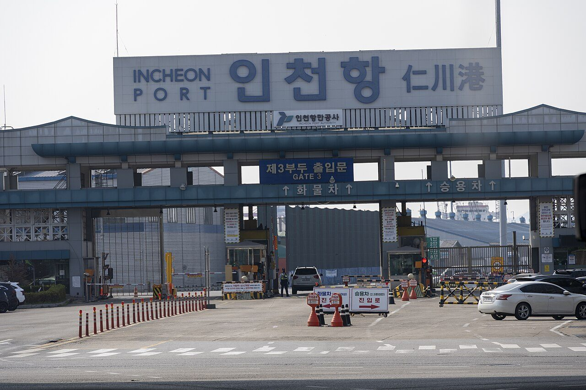
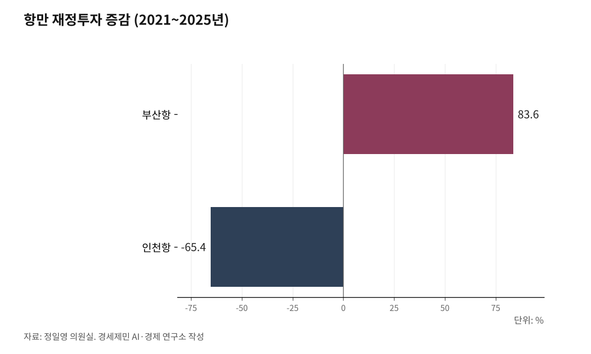

[인천해양주권⑤] LH 분리 PA 통합 '원칙 없는 행정'... 지지율은 최저 기록
비대화 막는다며 LH 기능 쪼개고 20년 독립채산 항만공사는 강제 단일화
공항은 신중론 내세워 보류하고 항만은 강행… 인천항 재정투자 65% 급감
항만공사 4개와 인천 지역 거세게 반발... 대통령 지지율은 40% 최저치
AI경세제민=김갑봉 기자 | 정부가 공공기관 524곳 가운데 109곳을 정비하는 계획을 발표하며 부산·인천·울산·여수광양 4대 항만공사를 가칭 한국항만공사 단일 체제로 묶는 방안을 확정한 뒤, 민심이 악화하고 있다.

정책과 기획, 예산 권한을 중앙 본사에 집중하고 기존 항만공사 4곳은 지역지사로 격하시키는 구조다. 해양수산부 산하기관도 16곳에서 5곳으로 대폭 축소한다. 정부는 2027년부터 단계별로 시행한다는 일정을 제시했으나 반발이 거세다.
발표 직후 각 항만공사 종사자는 거세게 반발했다. 항만공사 4곳 노동조합은 발표 당일 일제히 공동성명을 발표하고 노정 협의 없는 일방적 강제통합이라며 전면 투쟁을 선언했다. 이들은 정부가 정책 타당성을 입증할 비용편익 분석(B/C) 결과조차 내놓지 못하는 깜깜이 행정이라고 꼬집었다.
인천에서는 인천상공회의소와 인천항발전협의회, 인천항운노동조합, 인천항만물류협회 등 인천 지역 단체 16개도 공동성명을 발표하고 졸속 강제통합 방침을 즉각 철회하라고 강력히 촉구했다.
LH는 쪼개고 항만공사는 통합… 충돌하는 행정 기준
정부가 공공기관 개혁에서 제시한 행정 기준은 정반대로 충돌한다. 정부는 한국토지주택공사(LH)를 두고 비대해진 권한을 분산하고 독점과 방만 경영을 막아야 한다며 기능 분리를 추진한다. 거대 공룡 공기업의 비효율을 줄이려면 핵심 기능을 쪼개 상호 견제와 경영 투명성을 높여야 한다는 논리다.
반면 항만공사 4곳에는 정반대 잣대를 댄다. 2003년 이후 20년 넘게 각 항만 특성에 맞춰 독립채산제로 책임경영을 펼쳐온 공사들을 거대 단일 공기업으로 흡수 통합하려 한다.
한쪽에서는 독점을 해체한다며 공룡 공기업을 쪼개고 다른 쪽에서는 20년 자치 경영을 없애며 새로운 독점 공룡을 세운다. 비대화를 막는 조치와 비대화를 부르는 조치가 한 정부 안에서 동시에 벌어지며 행정의 일관성과 신뢰를 스스로 무너뜨렸다.

공항 통합 보류와 항만 강행… 동일 관문에 드러난 이중 잣대
이중 잣대는 국가 관문 교통 인프라 정책에서도 명백히 드러난다. 재정경제부는 같은 날 인천국제공항공사와 한국공항공사의 통합 추진을 전격 보류했다. 인천공항의 글로벌 허브 경쟁력을 지키고 국내 지방공항 활성화 대책을 먼저 마련한다는 명분을 내세웠다. 공항의 특수성과 국가 경쟁력 잠식을 우려해 신중론을 폈다.
공항에 적용한 신중한 기준은 항만 행정에서 사라졌다. 정부는 사전 협의나 공청회 한 번 거치지 않고 항만공사 4곳 통합을 밀어붙였다. 동일한 관문 교통망인데도 공항은 멈추고 항만은 일방통행으로 강행했다. 보안 자회사 5곳마저 한국항만보안시설공단으로 통합해 안전 혼란 우려를 키웠다.
공항은 속도를 조절하면서 대중국 교역의 40% 이상을 전담하는 서해안 물류 관문인 인천항은 일방 통합으로 몰아세웠다. 경인경제권 핵심 관문을 대하는 차별 행정에 지역사회가 분노하는 이유다.
김대중 구상과 항만공사법 제3조… 지워지는 20년 항만 자치
항만공사제도는 김대중 정부가 구상하고 노무현 정부가 법률로 세운 지방분권의 결실이다. 1999년 2월 기획예산처 정부개혁실은 해양수산부 경영진단보고서에서 부산항과 인천항에 '항만자치공사'를 세우자고 제안했고 그해 3월 김대중 정부 국무회의가 이를 의결했다. 명칭 자체에 자치를 새겨 항만 운영의 자율성을 법적으로 보장하려 했다.
노무현 정부는 2003년 5월 29일 항만공사법(법률 제6918호)을 제정했다. 법 제3조는 "항만공사의 책임경영체제의 확립을 위하여 그 자율적 운영은 보장된다"고 명시한다. 제4조 제2항은 공사를 항만별로 설립하라고 규정했다.
정부가 단일 통합을 하려면 국회에서 법률을 고쳐 20년간 지켜온 법정 자율성 조항부터 스스로 삭제해야 한다. 1908년 영국 런던항만공사 이래 해외 주요 항만이 확립한 자치 모델을 버리고 2010년 이명박 정부 당시 감사원 지적을 답습해 20년 자치 역사를 거꾸로 돌리는 모순이다.
부산 83% 늘고 인천 65% 줄어든 재정투자… 거대 본사가 부를 역차별
지역사회가 총궐기에 나선 핵심 배경에는 수치로 입증되는 구조적 재정 불평등이 자리한다. 국회 국토교통위원회 더불어민주당 정일영 국회의원(인천 연수을) 정책자료를 보면 최근 5년 동안(2021~2025년 기준) 정부 항만 재정투자는 부산항이 83.6% 급증한 반면 인천항은 65.4% 급감했다. 정부가 부산항에 재정을 집중하는 동안 인천항 인프라 투자는 철저히 소외됐다.
이러한 격차 속에서 권한이 중앙 본사로 넘어가면 경인경제권 항만 홀대는 영구화된다. 본사가 권한을 장악하면 인천항만공사가 거둔 수익이 타 지역 사업이나 본사 운영비로 흘러 들어갈 위험을 낳는다.
각 항만 특성에 맞춘 적기 투자는 본사 승인 절차에 묶여 표류할 수밖에 없다. 인천시의회는 2026년 2월 관리 감독 권한을 인천시로 넘기라는 결의안을 채택하며 자치 확대를 요구했다. 그러나 정부는 본사 종속과 지사 격하로 답했다.
단체 16개 총궐기와 지지율 40%… 사실이 가리키는 민심의 경고
원칙 없는 일방 행정에 현장은 총궐기로 맞섰다. 항만공사 4곳 노조는 강제통합 거부와 총력 투쟁을 선언했다. 인천상공회의소와 인천경실련 등 인천 지역 단체 16개도 공동성명을 내고 통합 철회를 촉구했다. 반면 지역의 백년 먹거리와 해양 주권이 흔들리는 상황에서 국회 다수 의석을 차지한 인천 지역 민주당 국회의원 11명 대다수는 침묵을 지킨다.
민심의 경고는 객관적 수치로 나타났다. 한국갤럽이 9월 1~3일 전국 만 18세 이상 1001명을 조사해 4일 발표한 여론조사를 보면 이재명 대통령 국정수행 긍정 평가는 전주보다 2%포인트 내린 40%로 취임 후 최저치를 기록했다. 부정 평가는 51%에 달했다. 부정 평가 이유는 부동산 정책(23%), 경제·민생(11%), 인사(9%) 순이었다.
연령별로는 18~29세 긍정 평가가 전주 대비 6%포인트 급락한 25%에 머물렀고 30대 역시 31%로 떨어졌다. 지역별 민심도 돌아섰다. 부산·울산·경남 지지율은 전주 대비 9%포인트 급락한 32%를 기록했고 경인경제권 지지율도 38%에 그쳤다. 민주당 지지율은 38%로 내렸고 국민의힘은 30%로 올라 양당 격차는 8%포인트로 좁혀졌다.
정부는 5극3특을 내걸고 지방분권을 공언했다. 그러나 비대화를 막겠다며 LH는 쪼개고, 20년간 자치 경영을 일군 항만공사는 단일 본사로 묶어 거대 공룡을 새로 만든다.
아울러 공항공사 통합은 멈추고 느닷없이 항만공사 통합을 강행한다. 권한을 지방에 넘기는 분권인가, 중앙 본사로 회수하는 관치 회귀인가. 법률 조문과 재정 통계, 그리고 40%로 내려앉은 민심의 지표가 사실을 가리킨다. 지지율은 괜히 떨어지는 게 아니다.
참고문헌
·재정경제부(2026), "공공기관 기능개혁 추진방안", 2026.09.03.
·「항만공사법」(법률 제6918호), 2003.05.29 제정.
·정유훈·안태훈(2011), 『항만공사 운영의 문제점과 개선과제』, 국회예산정책처.
·중앙선거여론조사심의위원회, "한국갤럽 2026년 9월 1주차 정례 여론조사(조사기간 2026.09.01~03)", 2026.09.04. https://www.nesdc.go.kr
·정일영 의원실(2026), "최근 5년간 국내 주요 무역항 정부 재정투자 현황 분석", 국회 국토교통위원회 정책자료집, 2026.09.03.
━━━━━━━━━━━━━━━━━━━━━━━━━━━━━━━━━━━━━━━━
저장 메모
━━━━━━━━━━━━━━━━━━━━━━━━━━━━━━━━━━━━━━━━
저장일 2026년 9월 5일(토요일)
저장 경위 소장님이 발행본을 직접 주시며 「2편으로 저장하라」고 지시하셨다.
★이 원고는 소장님이 쓰셨다. AI가 쓴 것이 아니다★
AI는 옮겨 저장만 했다. 그래서 인공지능 크레딧 문구를 붙이지 않았다.
1편(항만공사통합_1편)은 「인하대 해양AI융합센터 김갑봉 연구교수」다.
두 편의 바이라인이 다르다. 갈래나 매체가 다를 수 있다.
★소장님 결정 필요★ 이 폴더에 함께 둘지, 경세제민 갈래 폴더로 옮길지 정해 주시기 바란다.
원문 그대로 둔 것
소장님이 주신 글을 그대로 옮겼다. 내용을 고치지 않았다.
다만 붙여넣기 과정에서 생긴 것으로 보이는 것 둘만 손봤다.
하나. 부제 셋째 줄이 「인천항 재정투자 65% 급」에서 끊겨 있었다.
본문에 「인천항은 65.4% 급감했다」가 있어 「급감」으로 이었다.
임의로 지어낸 것이 아니라 본문에 있는 말로 이었다.
둘. 「표류할 수 밖에 없다」를 「표류할 수밖에 없다」로 붙여 적었다. 띄어쓰기다.
이 둘 말고는 한 글자도 고치지 않았다.
발행일 확인하지 못했다. 파일명 날짜는 저장일인 2026년 9월 5일을 썼다.
한국갤럽 조사 결과가 9월 4일 발표분이므로 집필은 9월 4일 이후다.
발행일과 매체를 알려 주시면 파일명과 이 메모를 고친다.
관련 자료
같은 폴더 항만공사통합_1편_김대중구상노무현설립_260904.txt
같은 폴더 항만공사통합_1999항만자치공사_260904.txt (9월 4일 초고. 지우지 않고 남겼다)
같은 폴더 사진자료_출처와저작권_260904.txt
사진 석 장(인천항 전경, 하역 크레인, 제1국제여객터미널)은 1편에 붙인 것이다.
이 2편에는 사진이 없다. 필요하면 지시해 주시기 바란다.
인천항 복합물류 연재와 겹치는 자료
이 원고가 인용한 아래 둘은 연재 소재풀에 올려 둘 만하다.
·정유훈·안태훈(2011), 『항만공사 운영의 문제점과 개선과제』, 국회예산정책처
·정일영 의원실(2026) 최근 5년 무역항 재정투자 현황
연재 14편(경인경제권 관문 전략)과 15편(제도와 거버넌스) 근거가 된다.
★소장님 지시가 있으면 소재풀에 올린다★ 아직 올리지 않았다.
사진 출처
· [대표사진] Alvis Jean, "Port of Incheon Pier 3 Gate.jpg", 위키미디어 공용, CC0, https://commons.wikimedia.org/wiki/File:Port_of_Incheon_Pier_3_Gate.jpg
※ 이 기사는 인공지능을 활용해 작성했습니다.
관련기사
- [인천해양주권④] 김대중 구상 노무현 설립 지역항만공사, 이재명 정부가 걷어차
- [인천해양주권⑥] 이재명 정부 항만공사 통합, 부산항 빚 4조4121억원 인천에 전가
- [인천해양주권①] 인천 섬 197개 확정, 남은 것은 바다 경계다
- [인천해양주권②] 서해 영해기점 마지막은 인천 섬 소령도, 그 위는 확정된 선이 없다
저작권자 © AI경세제민 무단전재 및 재배포, AI학습 및 활용 금지